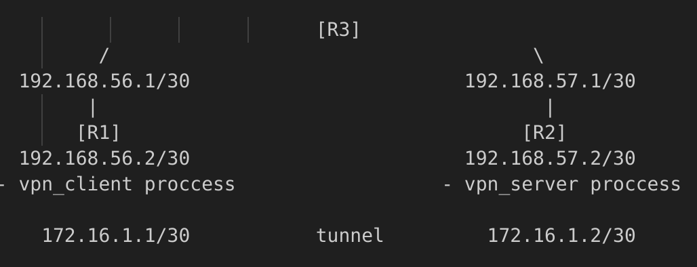

Topology:

Client requests connection to server: - Server is up and listens? - connect and proceed with client operations. - client watch for timeout from server during active connection - server closed connection? client terminate and release resources. - server watch for timeout from client during active connection - client closed connection? server terminate and release resources. - Server is down? - notify timeout trying to connect and release resources.
R1(client) traffic flows through tun0 -> R1 reaches R2(server) through its gw.
R2 reaches R1 through R2 gw.
All traffic with source address of tunnel not destined for tunnel, sent to external interface and masqurade.
R1 with vpn client process running, able to establish connection with R2 vpn server through tunneling.
R1 sends all its traffic to R2 (vpn server) which masqurades all traffic not belong to vpn subnet, out external interface, to host and out - can browse the web.
Example of frame protocols encapsulation (using wireshark) visible on external interface and tun0:
Captured on external interface [eth:ip:udp:udpencap:esp]:
Frame
IP packet with internal addresses of client/server
udp datagram
udpencap - udp encapsulated packet
esp - encapsulating security payload - IP packet encapsulated (not encrypted).
Captured on tun0 [raw:ip:tcp:ftp]:
Frame
IP packet with tunnel addresses
tcp segment
ftp - application
TCP meltdown happens when TCP VPN tunnel transporting another tcp traffic, if packet lost or damaged and packet retransmission required, internal tcp asks for retransmission, the same can happen on the outer TCP which can also experience packet loss, the inner TCP can treat the packets on the outer layer as retransmitted packets leading to delay, and issues.
As UDP is stateless protocol as oppose to TCP which is connection oriented and have connect protocol initiated with listen / accept, UDP doesnt need to listen for connections, as datagrams can come in any order from any source.
nc localhost 4500 -u # connect to udp socket, for testing
Raw sockets cannot be binded to port, as port related to TCP and UDP protocols. We work here at low level where concept of port is not known. So it can only read() and write() bytes from and to. Read raw bytes from tun and Write to.
Make sure tun0 interface exist while running program on the host:
ls /sys/devices/virtual/net/
tap - kernel process ethernet frames based on mac.
tun - kernel process IP packets, routing decisions based on destination IP.
TUN is a virtual device which is used for point-to-point connections at layer 3.
After interface configuration and adjusting the routing table accordingly for the point to point connection:
When process sends data, the packet will be passed to kernel which will check the route path for this packet in routing table. This packet related to point to point connection, kernel will send the packet through tun0 which will read the data, encapsulate it within another packet, and send back to kernel, this time it will route the packet outside the physical interface.
Client calls SetRouting to set its routing table accordingly after which it will enter a loop.